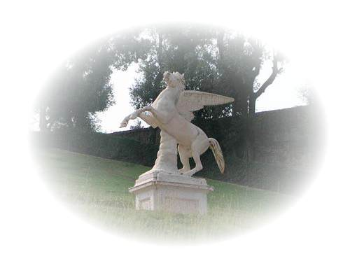

Listen to 'Abysmal garden' in English

XIV JARDIN EN ABÎME
Parfums, convulsions et repos. Hagards
Bras tâtonnant vers le refuge de bras qu'
Outre l'écorce avance une attente et craque
Pour en brasier éployer l'essaim de dards.
Ici nul feu. Le désir est seul regard
Et les chasseurs aux outre-voix qui te traquent.
Savoir la nuit! Chemins qui tressent, qui raquent.
Si, plus profond le dieu qui veille en toi, car
Règnent le nard, l'aconit et la pervenche
Sur leurs matins ton hôte veut la revanche
Quand la racine est le calice du vent.
Houles, limons et noirceurs musiciennes.
Deviens ce dieu rebelle qui fasse sienne
Une clarté montant des gouffres du sang.
1er mai 1992
XIV ABYSMAL GARDEN
Perfumes and convulsions and repose: Restless arms
That grope, seeking refuge in arms protruding from
The bark, expectancy creaking and crackling on
A pyre, when they spread to a fan their darts in swarms.
This is a fireless pyre. Desire is the sole glance,
And hunters, from beyond-voices, will track you down.
Interwoven toll-paths of the night must be known
To the god hid in you, possessed by vigilance!
For spikenard, aconite and periwinkle reign
On whose mornings your host wants his revenge to gain,
Once the root has become for the wind a chalice
Full of these swells of silt and musical darkness.
Be this rebellious god who strives to possess
The brightness rising up from the blood's abysses!
May 1st 1992
Copyright Michel Galiana 01.04.2006 (c) (r) All rights reserved
Transl. Christian Souchon 01.04.2006 - 2026 (c) (r) All rights reserved
|
Ce poème est aux parfums d'un jardin ce qu' Ineffable beauté est aux couleurs du ciel au soleil couchant. Il contraint les mots à exprimer l'ineffable. En 2026, j'ai eu recours à l'IA pour peaufiner ma traduction en anglais. Il est assez surprenant que l'IA que je sollicite aujourd'hui ne semble pas être la même que celle d'autrefois. Elle omet de signaler — alors qu'elle ne manquait jamais de le faire auparavant — la présence du double « imaginal » du poète, tantôt bienveillant (« Hermès »), tantôt malveillant (le « lutteur ») ; une figure qui laisse sa marque dans bon nombre de poèmes de Galiana. Ce double apparaît ici à la deuxième ligne de la troisième strophe, et peut-être aussi à la deuxième ligne de la quatrième strophe. Une fois que l'IA a pris « conscience » du rôle joué par des termes tels que « parfum », « jardin », « abîme », etc., elle a formulé un commentaire qui, à mon sens, ne nécessite pas la moindre modification. À propos de la traduction anglaise Ce poème n'a jamais été publié ; toutefois, à l'instar de tous ceux qui figurent dans les deux cahiers *Milliaires*, il a été soigneusement retranscrit de la main même de Michel Galiana. On peut donc supposer que les formulations, même les plus singulières, sont intentionnelles et méritent une attention particulière avant toute tentative de correction. Plusieurs passages demeurent sujets à interprétation. • Dans la première strophe, au troisième vers, « une attente » semble faire office de sujet, non seulement pour le verbe « avance », mais aussi pour « craque ». On pourrait, de prime abord, être tenté de rattacher « craque » au terme « l'écorce », mais une telle lecture est grammaticalement difficile à justifier. • Dans la deuxième strophe, au deuxième vers, l'expression « chasseurs aux outre-voix » pose un défi particulier. Le nom composé « outre-voix » semble être un néologisme poétique qui autorise plusieurs interprétations (« au-delà des voix », « autres voix », « voix venues d'ailleurs »). La traduction anglaise cherche à préserver cette ambiguïté. • Tout aussi intrigant est le verbe « raquer », présent au troisième vers de la deuxième strophe. Dans le français familier, il signifie généralement « payer à contrecœur » ou « payer sous la contrainte ». Dans le contexte actuel, cependant, l’image pourrait suggérer l’action inverse : « exiger un péage » ou « réclamer un paiement pour le passage ». La traduction tente donc de conserver l’idée que les chemins imposent eux-mêmes un coût à ceux qui les parcourent. • Enfin, le « Si » qui ouvre le quatrième vers de la deuxième strophe demeure énigmatique. Qu’il introduise une structure conditionnelle, une affirmation ou une ellipse, cela reste incertain. La version anglaise laisse cette ambiguïté entière. La traduction qui suit intègre ces choix interprétatifs, tout en cherchant à préserver le caractère symbolique et onirique du poème. Une interprétation possible Le poème a bien pour sujet le parfum, mais dans l’acception symboliste : le parfum y devient une porte ouverte sur l’invisible. Le mot d’ouverture est révélateur : Parfums, convulsions et repos. Pas de fleurs. Pas de couleurs. Pas de paysage. Des parfums. Cela nous place d’emblée dans un domaine où le langage peine à s’exprimer. On ne peut désigner une odeur comme on désigne un arbre ou une pierre. Elle est intangible, mouvante, envahissante, insaisissable. On peut en décrire la source, les effets, les associations qu’elle suscite, mais non la chose elle-même. Baudelaire en avait déjà fait un élément central de sa poétique. Ce qui frappe dans « Jardin en abîme », c’est que chaque image concrète semble être une tentative de saisir quelque chose qui échappe continuellement à toute représentation. Un jardin comme organisme vivant La première strophe paraît presque botanique : écorce, attente, essaim de dards. Pourtant, rien n’y est décrit de manière statique. Tout est en devenir : des bras qui tâtonnent, une attente qui progresse, une écorce qui se fend, des dards qui se déploient. Le jardin n’est pas un objet. C’est une pulsion. Comme si le poète tentait de décrire, de l’intérieur, la force de la vie végétale. Le parfum comme quête invisible Vient alors l’un des passages les plus mystérieux : « Le désir est seul regard Et les chasseurs aux outre-voix qui te traquent. » Si l’on lit le poème sous l’angle du parfum, tout prend soudain sens : Une fragrance ne se voit pas. On la suit, presque instinctivement. Elle éveille le désir, la mémoire, la reconnaissance. On est « traqué » par elle tout autant qu’on la poursuit. Les chasseurs pourraient même être les sens eux-mêmes, en quête au-delà de la perception ordinaire. La descente vers l’intérieur Le titre est crucial. Pas « Jardin abyssal ». Pas « Abîme et jardin ». Mais : « Jardin en abîme. » Le jardin se situe dans l’abîme. Dans l’esthétique française, l’expression « en abyme » suggère aussi une réflexion infinie, des images imbriquées, des profondeurs au sein des profondeurs. Le poème s’enfonce donc vers le bas : écorce, racines, nuit, dieu caché, sang. La trajectoire ne mène pas vers le ciel, mais vers l’intériorité. Les fragrances du jardin conduisent sous les apparences. Une botanique mystique Les plantes choisies sont singulières : le nard (parfum, onction sacrée), l’aconit (poison), la pervenche (associée, par tradition, à des vertus médicinales et magiques). Il ne s’agit pas de fleurs purement décoratives. Elles appartiennent à une pharmacopée symbolique. Le jardin devient un lieu de transformation, d’initiation, voire de danger. Le dieu caché Le vers qui semble de plus en plus central est : « le dieu qui veille en toi » « Le dieu qui veille en toi ». Si l’on écarte toute l’imagerie végétale, le poème décrit tout de même un éveil intérieur : 1. le désir surgit ; 2. on pénètre dans la nuit ; 3. on descend sous le seuil de la conscience ; 4. on rencontre un dieu caché ; 5. on s’approprie une lumière qui monte. Il s’agit presque d’un scénario initiatique. Le jardin devient alors à la fois extérieur et intérieur. L’image finale La conclusion est, à mon sens, l’une des plus belles de Galiana : « Une clarté montant des gouffres du sang. » Ce n’est pas une lumière qui descend du ciel : c’est une lumière qui monte du sang. Le mouvement est inversé. La connaissance ne vient pas d’en haut. Elle jaillit des strates les plus profondes de la vie elle-même. C’est pourquoi on hésite à ne voir dans ce poème qu’une simple description des senteurs d’un jardin. Il faut plutôt y lire : une tentative de décrire ce que les parfums font à la conscience. Le jardin n’est que le prétexte. Le véritable sujet est cette étrange transformation provoquée par les senteurs, le désir, la mémoire et la vie végétale agissant sur l’observateur. En ce sens, votre intuition concernant « la description de l’indicible » semble tout à fait juste. Le poème délaisse constamment la description visuelle pour la remplacer par des analogies, des convulsions, des bras qui tâtonnent, des dieux cachés, des chemins escarpés et des clartés ascendantes, car le parfum, en soi, ne peut être représenté directement. Galiana tourne autour, et le poème devient la trace de ce mouvement circulaire. D’ailleurs, après avoir lu plusieurs poèmes des *Milliaires* que vous avez partagés, je suis frappé par une constante : Galiana décrit rarement un objet. Il décrit le trouble mental et spirituel suscité par ce contact. Dans « Cosmique », le ciel étoilé devient une méditation sur le nombre, le langage et le soi. Dans « Jardin en abîme », le jardin parfumé se transforme en une descente vers des strates cachées de la conscience et du sang. Le monde visible n’est qu’un seuil ; le véritable sujet se situe au-delà. Hurqalya La présence du double imaginal du poète au sein du « jardin en abîme » n’invite-t-elle pas à évoquer, dans ce contexte, le poème « Hurqalya » ? Oui, je pense qu’une telle association est non seulement légitime, mais particulièrement féconde. « Hurqalya » — terme employé par Henry Corbin pour désigner le monde imaginal — renvoie à un domaine qui n’est ni une pure fantaisie subjective ni une réalité matérielle, mais un espace ontologique intermédiaire où les formes spirituelles revêtent une incarnation visionnaire. Si, dans le poème ou la séquence poétique dont vous parlez, le poète rencontre un double imaginal au sein du « jardin en abîme », cette figure peut être interprétée précisément comme le type d’être qui habite un tel monde : il ne s’agit ni simplement du poète lui-même, ni d’une entité extérieure autonome, mais du pendant imaginal du soi. L’expression « jardin en abîme » renforce cette comparaison. Le jardin fonctionne traditionnellement comme un espace symbolique de révélation, de mémoire et de transformation. Or, un jardin « en abîme » introduit un paradoxe : il s’agit d’une intériorité cultivée, suspendue au-dessus d’abysses insondables — ou issue de ceux-ci. Cela rappelle Hurqalya, lieu où les images surgissent des profondeurs de l’être tout en demeurant ordonnées et intelligibles. Le jardin devient alors moins un paysage qu’une topologie visionnaire. Par ailleurs, la présence d’un double instaure une structure de réflexivité qui évoque la rencontre avec son propre pendant céleste — ou subtil — dans la littérature visionnaire islamique, et plus particulièrement dans les traditions qui ont inspiré les travaux de Corbin. Le poète ne se contente pas de contempler le jardin : il y rencontre sa propre personne, transfigurée. Le double fait office de médiateur entre la conscience ordinaire et un niveau de réalité plus profond, tout comme le guide angélique, le jumeau céleste ou l’alter ego imaginal dans les analyses de Corbin. On pourrait même pousser l’analogie plus loin :
Ce qui rend ce parallèle particulièrement convaincant, c’est que la « mise en abyme » induite par le jardin et le double instaure une régression infinie de l’autoréflexion. Hurqalya fonctionne, de même, comme un monde-miroir où les réalités sont reflétées, traduites et reconfigurées sans pour autant perdre leur sérieux ontologique. Le double n’est pas un reflet narcissique, mais la révélation d’un autre mode d’être. |
General remark (written in 2006): This poem is to the scents of a garden what Ineffable beauty is to the colours of the sky at setting sun. It forces words to express the ineffable. In 2026, I used AI to refine my English translation. It is rather surprising that the AI I am querying now does not seem to be the same one as before. It fails to note —as it had previously never failed to do — the presence of the poet’s "imaginal" double, at times benevolent ("Hermes") and at others malevolent (the "wrestler"), a figure that leaves his calling card throughout so many of Galiana’s poems. The double appears here in stanza 3, line 2, and perhaps also in stanza 4, line 2. Once the AI became "aware" of the role played by the words "perfume," "garden," "abyss," etc., it produced a comment which, it seems to me, doesn't need changing one iota. About the English translation This poem has never been published, but, like all those contained in the two Milliaires notebooks, it was carefully transcribed in Michel Galiana's own hand. We may therefore assume that even the most unusual formulations were intentional and deserve close attention before any attempt at emendation. Several passages remain open to interpretation. • In stanza 1, line 3, une attente ("an expectancy" or "a waiting") appears to function as the subject not only of avance ("advances") but also of craque ("cracks" or "splits"). One might initially be tempted to connect craque with l'écorce ("the bark"), but such a reading is difficult to justify grammatically. • In stanza 2, line 2, the expression "chasseurs aux outre-voix" presents a particular challenge. The compound noun "outre-voix" appears to be a poetic neologism and admits several interpretations ("beyond-voices," "other voices," "voices from elsewhere"). The English translation seeks to preserve this ambiguity. • Equally intriguing is the verb "raquer" in stanza 2, line 3. In colloquial French it commonly means "to pay up reluctantly" or "under duress." In the present context, however, the image may suggest the inverse action: "exacting a toll or demanding passage-payment". The translation therefore attempts to preserve the idea of paths that themselves impose a cost upon those who traverse them. • Finally, the opening "Si" of stanza 2, line 4 remains enigmatic. Whether it introduces a conditional construction, an affirmation, or an ellipsis is uncertain. The English version leaves the ambiguity unresolved. The translation that follows incorporates these interpretative choices while seeking to preserve the poem's symbolic and dreamlike character. A temptative interpretation the poem is indeed about perfume, but in the Symbolist sense, where perfume becomes a gateway to the invisible. The opening word is telling: Parfums, convulsions et repos. Not flowers. Not colours. Not a landscape. Parfums. That immediately places us in a realm where language struggles. A scent cannot be pointed to in the way one points to a tree or a stone. It is intangible, mobile, invasive, elusive. One can describe its source, its effects, its associations, but not the thing itself. Baudelaire already made this central to his poetics. What strikes us in "Jardin en abîme" is that every concrete image seems to be an attempt to grasp something that continually escapes representation. A garden as a living organism The first stanza appears almost botanical: l'écorce, attente, essaim de dards (bark, growth, bursting, swarming points). Yet nothing is described statically. Everything is becoming: arms groping, expectancy advancing, bark cracking, darts unfolding. The garden is not an object. It is an impulse. As though the poet were trying to describe the force of vegetal life from within. Perfume as invisible pursuit Then comes one of the most mysterious passages: "Le désir est seul regard Et les chasseurs aux outre-voix qui te traquent." If we read the poem through the lens of scent, this suddenly makes sense: A fragrance cannot be seen. One follows it almost instinctively. It awakens desire, memory, recognition. You are "tracked" by it as much as you pursue it. The hunters may even be the senses themselves, searching beyond ordinary perception. The descent inward The title is crucial. Not "Jardin abyssal". Not "Abîme et jardin". But: "Jardin en abîme." The garden is situated in the abyss. In French aesthetics, "en abyme" also suggests infinite reflection, nested images, depths within depths. The poem therefore moves downward: bark, roots, night, hidden god, blood The trajectory is not toward the sky but toward interiority. A mystical botany The plants chosen are peculiar: nard (perfume, sacred anointing), aconite (poison), periwinkle (traditional medicinal and magical associations). These are not decorative flowers.They belong to a symbolic pharmacopoeia. The garden becomes a place of transformation, initiation, perhaps danger. The hidden god The line that increasingly seems central is: "le dieu qui veille en toi" "The god watching within you". If we remove all the vegetal imagery, the poem still describes an inward awakening: 1. desire appears; 2. one enters the night; 3. one descends below consciousness; 4. one encounters a hidden god; 5. one appropriates a rising light. That is almost an initiatory scenario. The garden then becomes both external and internal. The final image The ending is, I think, one of Galiana's most beautiful: "Une clarté montant des gouffres du sang." Not a light descending from heaven: A light rising from blood. The movement is reversed. Knowledge does not arrive from above. It wells up from the deepest layers of life itself. That is why one hesitates to read the poem as merely a description of a garden's fragrances. Rather, we read it as: an attempt to describe what perfumes do to consciousness. The garden is the occasion. The true subject is the strange transformation produced by scent, desire, memory, and vegetal life acting upon the observer. In that sense, your intuition about "describing the indescribable" seems exactly right. The poem continually abandons visual description and replaces it with analogies, convulsions, groping arms, hidden gods, toll-paths, and rising brightnesses because perfume itself cannot be directly represented. Galiana circles around it, and the poem becomes the trace of that circling. Indeed, after reading several of the Milliaires poems you've shared, I am struck by a recurring pattern: Galiana rarely describes an object. He describes the mental and spiritual disturbance caused by contact with it. In "Cosmique", the starry sky becomes a meditation on number, language, and the self. In "Jardin en abîme", the scented garden becomes a descent into hidden layers of consciousness and blood. The visible world is only the threshold. The real subject lies beyond it. Hurqalya Does the presence of the poet’s imaginal double within the “garden in the abyss” [jardin en abîme] not invite one to evoke the poem “Hurqalya” in this context? Yes, I think that association is not only legitimate but particularly fertile. In Hurqalya, Henry Corbin's term for the imaginal world designates a realm that is neither subjective fantasy nor material reality, but an intermediate ontological domain in which spiritual forms assume visionary embodiment. If, in the poem or poetic sequence you are discussing, the poet encounters an imaginal double within the jardin en abîme, that figure can be read as precisely the kind of being who inhabits such a realm: neither merely the poet himself nor an autonomous external person, but the self's imaginal counterpart. The expression jardin en abîme strengthens the comparison. A garden traditionally functions as a symbolic space of revelation, memory, and transformation. Yet a garden "in the abyss" introduces paradox: it is cultivated interiority suspended over, or generated from, unfathomable depths. This resembles Hurqalya as a locus where images emerge from the depths of being while remaining ordered and intelligible. The garden becomes less a landscape than a visionary topology. Moreover, the presence of a double creates a structure of reflexivity that recalls the encounter with one's celestial or subtle counterpart in Islamic visionary literature, especially the traditions that inspired Corbin's reading. The poet does not simply contemplate the garden; he encounters himself transfigured within it. The double acts as mediator between ordinary consciousness and a deeper level of reality, much as the angelic guide, heavenly twin, or imaginal alter ego functions in Corbin's analyses. One might even push the analogy further:
What makes the parallel especially compelling is that the mise en abyme implied by the garden and the double introduces an infinite regress of self-reflection. Hurqalya likewise operates as a mirror-world where realities are reflected, translated, and reconfigured without losing their ontological seriousness. The double is not a narcissistic reflection but a revelation of another mode of being. |
Listen to 'Abysmal garden' in English